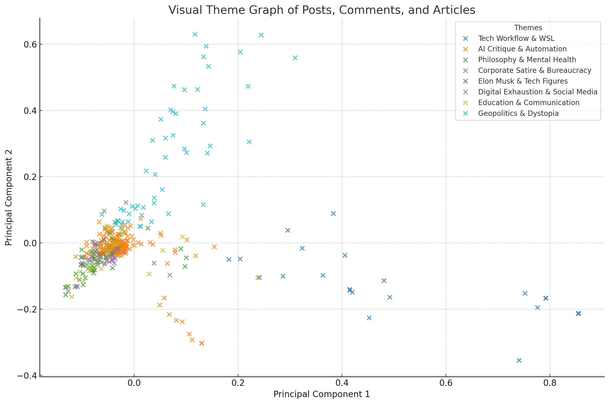
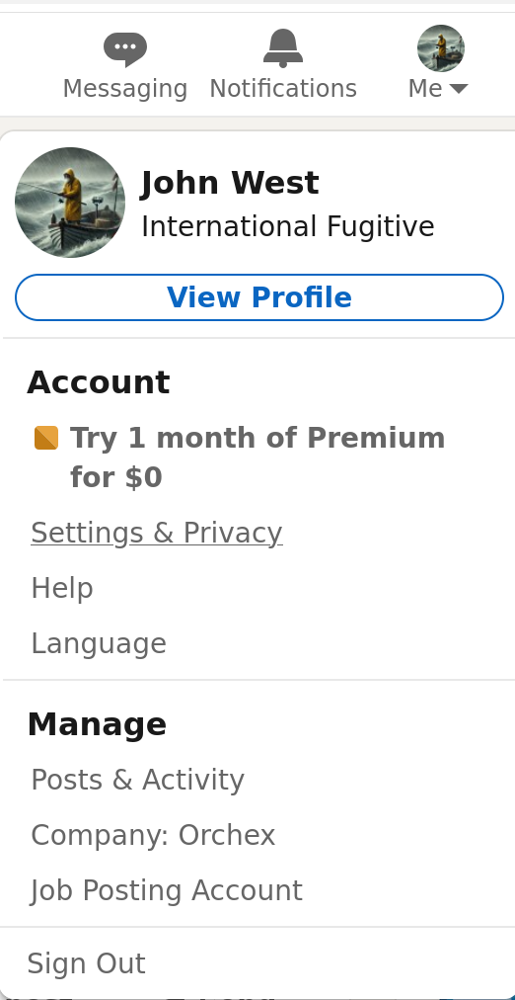
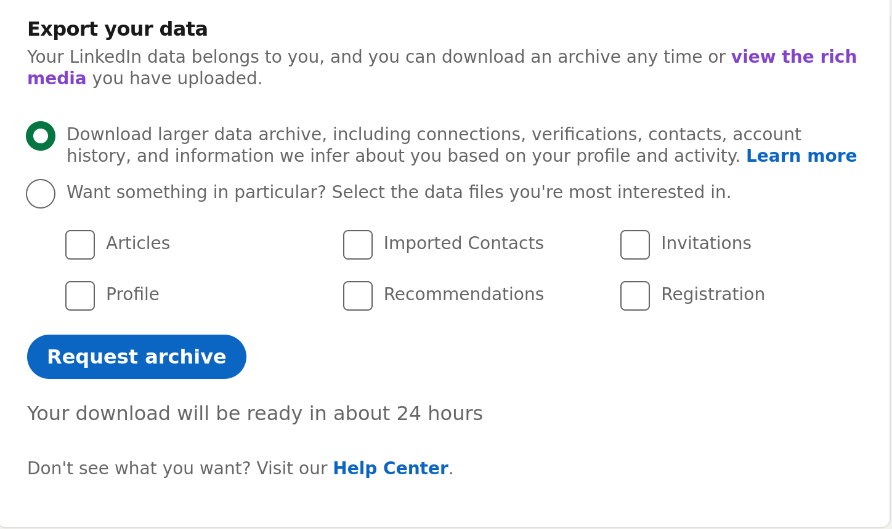

Export and Analyze Your LinkedIn
You can export your data from LinkedIn for archival, analytical, and other purposes. You can let various forms of Artificial Intelligence analyze this data.
Originally posted here:
Source:
To export your data from LinkedIn:

- Log in to the LinkedIn desktop website. It may be possible to trigger the export process from the mobile site or the app, but I haven't tried it.
- Click Me at the top right, under your profile image.
- Click Settings and Privacy from the menu that appears.
- Select Data Privacy from the menu at the left.
- Select Get a copy of your data. This might take you to https://www.linkedin.com/mypreferences/d/download-my-data.
- In the dialog that appears, the view the rich media link has never worked. Select the Download larger data archive... option and click Request archive.

LinkedIn takes some time, apparently to retrieve data, and then emails you when an iniital zip file is ready. Then it emails you when a large zip file is ready.
In this zip file:
- The
Articlesfolder contains any articles. Zip this to createArticles.zip. Comments.csvcontains your comments.Connections.csvare your connections.Contacts.csvappears to be contacts that you have imported, for example from gmail.Messages.csvcontains metadata about your direct messages.Shares.csvcontains your posts.
Consider uploading Articles.zip, Comments.zip, and Shares.zip to an LLM for analysis. Consider the following prompts:
Analyze and summarize the attached content, noting that much of this is humor and lacks interaction context. Group by theme, try to keep it under 1000 words, headings and bullet points without nesting.
Generate a visual theme graph.
Here are my interactions:
To summarize what ChatGPT thinks of my LinkedIn content:
This body of work forms a dense, multivocal, self-aware web of ideas that fuse:
- Engineer's rigor.
- Skeptic's edge.
- Satirist's bite.
- Survivor's vulnerability.
It critiques a collapsing internet, mourns degraded discourse, and offers grim amusement amid the wreckage.
...
If it were a philosophy, it wouldn't be optimism. It'd be post-human pragmatism wrapped in gallows wit."
Related Content
Comments
You can comment here: